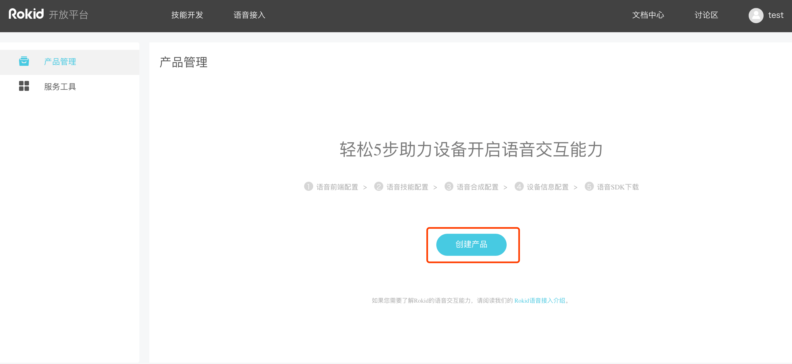
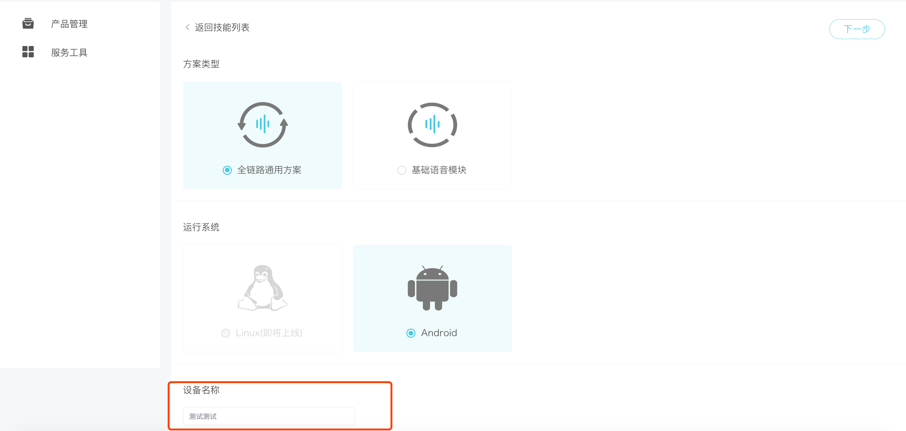
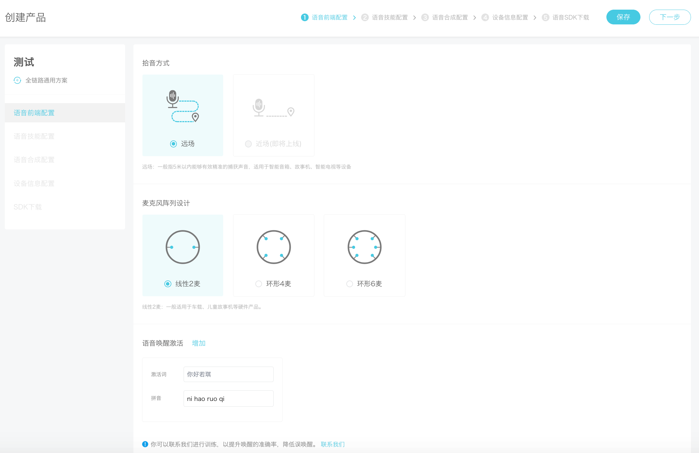
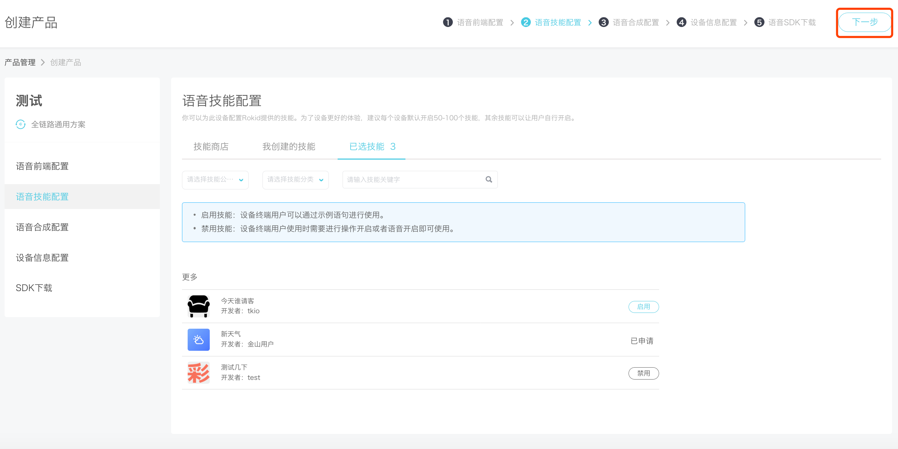
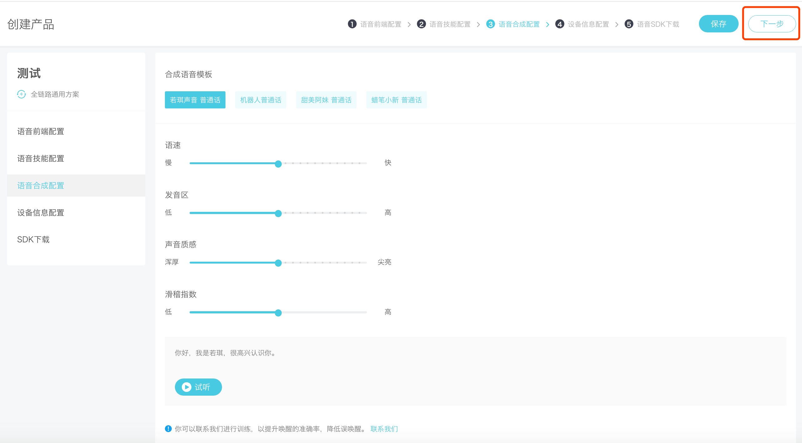
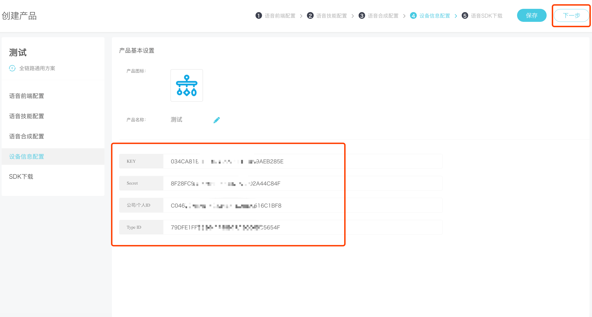
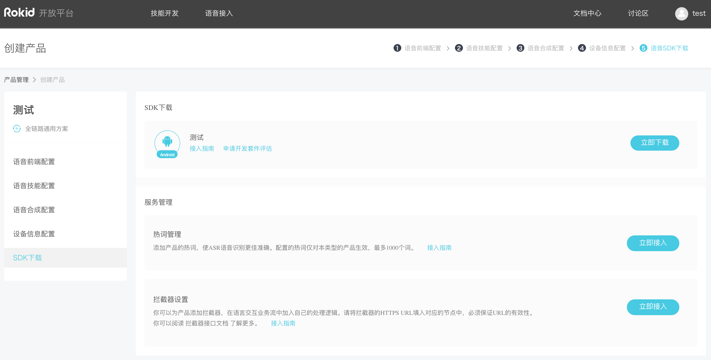

<!DOCTYPE HTML>
<html lang="" >
    <head>
        <meta charset="UTF-8">
        <meta content="text/html; charset=utf-8" http-equiv="Content-Type">
        <title>创建设备流程 · GitBook</title>
        <meta http-equiv="X-UA-Compatible" content="IE=edge" />
        <meta name="description" content="">
        <meta name="generator" content="GitBook 3.2.3">
        
        
        
    
    <link rel="stylesheet" href="../gitbook/style.css">

    
            
                
                <link rel="stylesheet" href="../gitbook/gitbook-plugin-expandable-chapters-interactive/expandable-chapters.css">
                
            
                
                <link rel="stylesheet" href="../gitbook/gitbook-plugin-highlight/website.css">
                
            
                
                <link rel="stylesheet" href="../gitbook/gitbook-plugin-search/search.css">
                
            
                
                <link rel="stylesheet" href="../gitbook/gitbook-plugin-fontsettings/website.css">
                
            
        

    

    
        
    
        
    
        
    
        
    
        
    
        
    

        
    
    
    <meta name="HandheldFriendly" content="true"/>
    <meta name="viewport" content="width=device-width, initial-scale=1, user-scalable=no">
    <meta name="apple-mobile-web-app-capable" content="yes">
    <meta name="apple-mobile-web-app-status-bar-style" content="black">
    <link rel="apple-touch-icon-precomposed" sizes="152x152" href="../gitbook/images/apple-touch-icon-precomposed-152.png">
    <link rel="shortcut icon" href="../gitbook/images/favicon.ico" type="image/x-icon">

    
    <link rel="next" href="usage.html" />
    
    

    </head>
    <body>
        
<div class="book">
    <div class="book-summary">
        
            
<div id="book-search-input" role="search">
    <input type="text" placeholder="Type to search" />
</div>

            
                <nav role="navigation">
                


<ul class="summary">
    
    

    

    
        
        
    
        <li class="chapter " data-level="1.1" data-path="../">
            
                <a href="../">
            
                    
                    Introduction
            
                </a>
            

            
        </li>
    
        <li class="chapter " data-level="1.2" >
            
                <span>
            
                    
                    智能设备语音接入平台
            
                </span>
            

            
            <ul class="articles">
                
    
        <li class="chapter " data-level="1.2.1" data-path="../introduction.html">
            
                <a href="../introduction.html">
            
                    
                    平台简介
            
                </a>
            

            
        </li>
    

            </ul>
            
        </li>
    
        <li class="chapter " data-level="1.3" >
            
                <span>
            
                    
                    新手入门
            
                </span>
            

            
            <ul class="articles">
                
    
        <li class="chapter active" data-level="1.3.1" data-path="create-device.html">
            
                <a href="create-device.html">
            
                    
                    创建设备流程
            
                </a>
            

            
        </li>
    
        <li class="chapter " data-level="1.3.2" data-path="usage.html">
            
                <a href="usage.html">
            
                    
                    认证文件使用方法
            
                </a>
            

            
        </li>
    

            </ul>
            
        </li>
    
        <li class="chapter " data-level="1.4" data-path="../important-concept.html">
            
                <a href="../important-concept.html">
            
                    
                    重要概念
            
                </a>
            

            
        </li>
    
        <li class="chapter " data-level="1.5" >
            
                <span>
            
                    
                    语音方案介绍
            
                </span>
            

            
            <ul class="articles">
                
    
        <li class="chapter " data-level="1.5.1" data-path="../AudioAiSdk/fullLink/fulllink.html">
            
                <a href="../AudioAiSdk/fullLink/fulllink.html">
            
                    
                    Android 系统级别全链路通用方案
            
                </a>
            

            
        </li>
    
        <li class="chapter " data-level="1.5.2" data-path="../AudioAiSdk/RokidAiSdk/RokidAiSdk.html">
            
                <a href="../AudioAiSdk/RokidAiSdk/RokidAiSdk.html">
            
                    
                    Android APK级别aar类型全链路方案
            
                </a>
            

            
        </li>
    
        <li class="chapter " data-level="1.5.3" data-path="../tutorials/example3/intro.html">
            
                <a href="../tutorials/example3/intro.html">
            
                    
                    Android 无需激活的语音识别集成
            
                </a>
            

            
            <ul class="articles">
                
    
        <li class="chapter " data-level="1.5.3.1" data-path="../speechTTS/introduce.html">
            
                <a href="../speechTTS/introduce.html">
            
                    
                    概述
            
                </a>
            

            
        </li>
    
        <li class="chapter " data-level="1.5.3.2" data-path="../speechTTS/sdk_dir.html">
            
                <a href="../speechTTS/sdk_dir.html">
            
                    
                    SDK目录结构
            
                </a>
            

            
        </li>
    
        <li class="chapter " data-level="1.5.3.3" data-path="../speechTTS/init.html">
            
                <a href="../speechTTS/init.html">
            
                    
                    集成
            
                </a>
            

            
            <ul class="articles">
                
    
        <li class="chapter " data-level="1.5.3.3.1" data-path="../speechTTS/init_prepare.html">
            
                <a href="../speechTTS/init_prepare.html">
            
                    
                    集成前准备
            
                </a>
            

            
        </li>
    
        <li class="chapter " data-level="1.5.3.3.2" data-path="../speechTTS/init_speech.html">
            
                <a href="../speechTTS/init_speech.html">
            
                    
                    语音识别Speech集成
            
                </a>
            

            
        </li>
    
        <li class="chapter " data-level="1.5.3.3.3" data-path="../speechTTS/init_tts.html">
            
                <a href="../speechTTS/init_tts.html">
            
                    
                    语音合成TTS集成
            
                </a>
            

            
        </li>
    

            </ul>
            
        </li>
    
        <li class="chapter " data-level="1.5.3.4" >
            
                <span>
            
                    
                    API调用说明
            
                </span>
            

            
            <ul class="articles">
                
    
        <li class="chapter " data-level="1.5.3.4.1" data-path="../speechTTS/api_speech.html">
            
                <a href="../speechTTS/api_speech.html">
            
                    
                    语音识别Speech
            
                </a>
            

            
        </li>
    
        <li class="chapter " data-level="1.5.3.4.2" data-path="../speechTTS/api_tts.html">
            
                <a href="../speechTTS/api_tts.html">
            
                    
                    语音合成TTS
            
                </a>
            

            
        </li>
    

            </ul>
            
        </li>
    
        <li class="chapter " data-level="1.5.3.5" >
            
                <a target="_blank" href="https://github.com/Rokid/RokidSpeechTTSDemo">
            
                    
                    示例DEMO
            
                </a>
            

            
        </li>
    

            </ul>
            
        </li>
    

            </ul>
            
        </li>
    
        <li class="chapter " data-level="1.6" >
            
                <span>
            
                    
                    Linux基础架构
            
                </span>
            

            
            <ul class="articles">
                
    
        <li class="chapter " data-level="1.6.1" data-path="../speechTTS/introduce.html">
            
                <a href="../speechTTS/introduce.html">
            
                    
                    概述
            
                </a>
            

            
        </li>
    
        <li class="chapter " data-level="1.6.2" data-path="../linuxsdk/sdk_linux_dir.html">
            
                <a href="../linuxsdk/sdk_linux_dir.html">
            
                    
                    目录结构
            
                </a>
            

            
        </li>
    
        <li class="chapter " data-level="1.6.3" >
            
                <span>
            
                    
                    快速集成
            
                </span>
            

            
            <ul class="articles">
                
    
        <li class="chapter " data-level="1.6.3.1" data-path="../linuxsdk/init_linux_prepare.html">
            
                <a href="../linuxsdk/init_linux_prepare.html">
            
                    
                    集成前准备
            
                </a>
            

            
        </li>
    
        <li class="chapter " data-level="1.6.3.2" data-path="../linuxsdk/begin_integrate.html">
            
                <a href="../linuxsdk/begin_integrate.html">
            
                    
                    开始集成
            
                </a>
            

            
        </li>
    

            </ul>
            
        </li>
    
        <li class="chapter " data-level="1.6.4" >
            
                <span>
            
                    
                    API 接口
            
                </span>
            

            
            <ul class="articles">
                
    
        <li class="chapter " data-level="1.6.4.1" data-path="../linuxsdk/linux_tts_api.html">
            
                <a href="../linuxsdk/linux_tts_api.html">
            
                    
                    语音合成服务
            
                </a>
            

            
        </li>
    
        <li class="chapter " data-level="1.6.4.2" data-path="../linuxsdk/linux_speech_api.html">
            
                <a href="../linuxsdk/linux_speech_api.html">
            
                    
                    语音识别服务
            
                </a>
            

            
        </li>
    

            </ul>
            
        </li>
    

            </ul>
            
        </li>
    
        <li class="chapter " data-level="1.7" data-path="../common/err_code.html">
            
                <a href="../common/err_code.html">
            
                    
                    错误码
            
                </a>
            

            
        </li>
    
        <li class="chapter " data-level="1.8" data-path="../common/api_json.html">
            
                <a href="../common/api_json.html">
            
                    
                    Json格式配置字串
            
                </a>
            

            
        </li>
    

    

    <li class="divider"></li>

    <li>
        <a href="https://www.gitbook.com" target="blank" class="gitbook-link">
            Published with GitBook
        </a>
    </li>
</ul>


                </nav>
            
        
    </div>

    <div class="book-body">
        
            <div class="body-inner">
                
                    

<div class="book-header" role="navigation">
    

    <!-- Title -->
    <h1>
        <i class="fa fa-circle-o-notch fa-spin"></i>
        <a href=".." >创建设备流程</a>
    </h1>
</div>


                    <div class="page-wrapper" tabindex="-1" role="main">
                        <div class="page-inner">
                            
<div id="book-search-results">
    <div class="search-noresults">
    
                                <section class="normal markdown-section">
                                
                                <ol>
<li>&#x767B;&#x9646;<a href="#">&#x5F00;&#x653E;&#x5E73;&#x53F0;</a>&#x540E;&#xFF0C;&#x9009;&#x62E9;&#x8BED;&#x97F3;&#x63A5;&#x5165;&#xFF0C;&#x5355;&#x51FB;&#x300C;&#x521B;&#x5EFA;&#x4EA7;&#x54C1;&#x300D;&#x5F00;&#x59CB;&#x521B;&#x5EFA;
</li>
<li>&#x9ED8;&#x8BA4;&#x9009;&#x62E9;&#x300C;&#x5168;&#x94FE;&#x8DEF;&#x901A;&#x7528;&#x65B9;&#x6848;&#x300D;&#x548C;&#x300C;Android&#x300D;&#xFF0C;&#x53EF;&#x5B89;&#x9700;&#x91CD;&#x65B0;&#x9009;&#x62E9;&#xFF0C;&#x7136;&#x540E;&#x5728;&#x7EA2;&#x8272;&#x6846;&#x6846;&#x6807;&#x8BB0;&#x5904;&#x7ED9;&#x4F60;&#x7684;&#x8BBE;&#x5907;&#x53D6;&#x4E00;&#x4E2A;&#x540D;&#x5B57;&#x3002; 
</li>
<li>&#x62FE;&#x97F3;&#x65B9;&#x5F0F;&#x9ED8;&#x8BA4;&#x503C;&#x300C;&#x8FDC;&#x573A;&#x300D;&#xFF0C;&#x9EA6;&#x514B;&#x98CE;&#x9635;&#x5217;&#x8BBE;&#x8BA1;&#x9ED8;&#x8BA4;&#x503C;&#x300C;&#x7EBF;&#x6027;2&#x9EA6;&#x300D;&#xFF0C;&#x53EF;&#x6309;&#x9700;&#x9009;&#x62E9;&#xFF0C;&#x7136;&#x540E;&#x586B;&#x5199;&#x300C;&#x6FC0;&#x6D3B;&#x8BCD;&#x300D;&#xFF0C;&#x5C06;&#x81EA;&#x52A8;&#x751F;&#x6210;&#x300C;&#x62FC;&#x97F3;&#x300D;&#x3002;
</li>
<li>&#x5728;&#x6280;&#x80FD;&#x5546;&#x5E97;&#x9009;&#x62E9;&#x9700;&#x8981;&#x63A5;&#x5165;&#x7684;&#x6280;&#x80FD;&#xFF0C;&#x5982;&#x679C;&#x6D89;&#x53CA;&#x5230;&#x9700;&#x8981;&#x6388;&#x6743;&#x7684;&#x6280;&#x80FD;&#xFF0C;&#x5148;&#x7533;&#x8BF7;&#x6388;&#x6743;&#x3002;&#x8FD8;&#x53EF;&#x9009;&#x62E9;&#x300C;&#x6211;&#x521B;&#x5EFA;&#x7684;&#x6280;&#x80FD;&#x300D;&#xFF0C;&#x7136;&#x540E;&#x6240;&#x9009;&#x7684;&#x6280;&#x80FD;&#x4F1A;&#x5C55;&#x793A;&#x5728;&#x300C;&#x5DF2;&#x9009;&#x6280;&#x80FD;&#x300D;&#xFF0C;&#x5982;&#x4E0B;&#x56FE;&#x6240;&#x793A;&#xFF1A;
</li>
<li>&#x5982;&#x4E0B;&#x56FE;&#x6240;&#x793A;&#xFF0C;&#x8C03;&#x6574;&#x597D;&#x8BED;&#x97F3;&#x7684;&#x5404;&#x9879;&#x53C2;&#x6570;&#xFF0C;&#x53EF;&#x9009;&#x62E9;&#x8BD5;&#x542C;&#x3002;&#x7136;&#x540E;&#x8FDB;&#x5165;&#x300C;&#x4E0B;&#x4E00;&#x6B65;&#x300D;&#x3002;
</li>
<li>&#x5982;&#x4E0B;&#x56FE;&#x6240;&#x793A;&#xFF0C;&#x6DFB;&#x52A0;&#x300C;&#x4EA7;&#x54C1;&#x56FE;&#x6807;&#x300D;&#xFF0C;&#x53EF;&#x4FEE;&#x6539;&#x300C;&#x4EA7;&#x54C1;&#x540D;&#x79F0;&#x300D;&#xFF0C;&#x56FE;&#x4E2D;&#x7684;Key&#x3001;Secret&#x3001;&#x516C;&#x53F8;/&#x4E2A;&#x4EBA;ID&#x3001;TypeID&#x5168;&#x90E8;&#x81EA;&#x52A8;&#x751F;&#x6210;&#x3002;
</li>
<li>&#x5982;&#x4E0B;&#x56FE;&#xFF0C;&#x6700;&#x540E;&#x4E00;&#x6B65;&#x53EF;&#x4E0B;&#x8F7D;SDK&#x3001;&#x63A5;&#x5165;&#x70ED;&#x8BCD;&#x3001;&#x8BBE;&#x7F6E;&#x62E6;&#x622A;&#x5668;&#x3002;
</li>
</ol>

                                
                                </section>
                            
    </div>
    <div class="search-results">
        <div class="has-results">
            
            <h1 class="search-results-title"><span class='search-results-count'></span> results matching "<span class='search-query'></span>"</h1>
            <ul class="search-results-list"></ul>
            
        </div>
        <div class="no-results">
            
            <h1 class="search-results-title">No results matching "<span class='search-query'></span>"</h1>
            
        </div>
    </div>
</div>

                        </div>
                    </div>
                
            </div>

            
                
                
                <a href="usage.html" class="navigation navigation-next navigation-unique" aria-label="Next page: 认证文件使用方法">
                    <i class="fa fa-angle-right"></i>
                </a>
                
            
        
    </div>

    <script>
        var gitbook = gitbook || [];
        gitbook.push(function() {
            gitbook.page.hasChanged({"page":{"title":"创建设备流程","level":"1.3.1","depth":2,"next":{"title":"认证文件使用方法","level":"1.3.2","depth":2,"path":"rookie-guide/usage.md","ref":"rookie-guide/usage.md","articles":[]},"previous":{"title":"新手入门","level":"1.3","depth":1,"ref":"","articles":[{"title":"创建设备流程","level":"1.3.1","depth":2,"path":"rookie-guide/create-device.md","ref":"rookie-guide/create-device.md","articles":[]},{"title":"认证文件使用方法","level":"1.3.2","depth":2,"path":"rookie-guide/usage.md","ref":"rookie-guide/usage.md","articles":[]}]},"dir":"ltr"},"config":{"gitbook":"*","theme":"default","variables":{},"plugins":["expandable-chapters-interactive"],"pluginsConfig":{"expandable-chapters-interactive":{},"highlight":{},"search":{},"lunr":{"maxIndexSize":1000000,"ignoreSpecialCharacters":false},"sharing":{"facebook":true,"twitter":true,"google":false,"weibo":false,"instapaper":false,"vk":false,"all":["facebook","google","twitter","weibo","instapaper"]},"fontsettings":{"theme":"white","family":"sans","size":2},"theme-default":{"styles":{"website":"styles/website.css","pdf":"styles/pdf.css","epub":"styles/epub.css","mobi":"styles/mobi.css","ebook":"styles/ebook.css","print":"styles/print.css"},"showLevel":false}},"structure":{"langs":"LANGS.md","readme":"README.md","glossary":"GLOSSARY.md","summary":"SUMMARY.md"},"pdf":{"pageNumbers":true,"fontSize":12,"fontFamily":"Arial","paperSize":"a4","chapterMark":"pagebreak","pageBreaksBefore":"/","margin":{"right":62,"left":62,"top":56,"bottom":56}},"styles":{"website":"styles/website.css","pdf":"styles/pdf.css","epub":"styles/epub.css","mobi":"styles/mobi.css","ebook":"styles/ebook.css","print":"styles/print.css"}},"file":{"path":"rookie-guide/create-device.md","mtime":"2018-09-19T13:11:26.655Z","type":"markdown"},"gitbook":{"version":"3.2.3","time":"2018-09-19T13:12:35.949Z"},"basePath":"..","book":{"language":""}});
        });
    </script>
</div>

        
    <script src="../gitbook/gitbook.js"></script>
    <script src="../gitbook/theme.js"></script>
    
        
        <script src="../gitbook/gitbook-plugin-expandable-chapters-interactive/expandable-chapters.js"></script>
        
    
        
        <script src="../gitbook/gitbook-plugin-search/search-engine.js"></script>
        
    
        
        <script src="../gitbook/gitbook-plugin-search/search.js"></script>
        
    
        
        <script src="../gitbook/gitbook-plugin-lunr/lunr.min.js"></script>
        
    
        
        <script src="../gitbook/gitbook-plugin-lunr/search-lunr.js"></script>
        
    
        
        <script src="../gitbook/gitbook-plugin-sharing/buttons.js"></script>
        
    
        
        <script src="../gitbook/gitbook-plugin-fontsettings/fontsettings.js"></script>
        
    

    </body>
</html>

